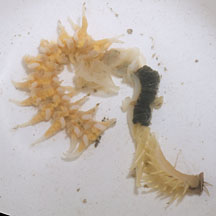

|
|
| worms text index | photo index |
| worms > various animal groups |
| Tubeworms updated Oct 2016
Where seen? Tubeworms are common on all our shores and near mangroves. They are most obvious on sand bars and flat shores (sandy or muddy) where they stick out of the surface in large numbers. In seagrass areas, some are found in large numbers in mounds that can be 1m or more wide. Their tubes can extend quite deep into the ground, only a little bit of the tube sticks out of the ground. At low tide, the worm may be even deeper still. Some tubeworms can give a nasty bite. Please don't dig up tubes to try to see the worm. What are tubeworms? There are many kinds of worms on our shores. Worms that create tubes and live inside them are called tubeworms. But these are not necessarily closely related to one another. And not all animals that live in tubes are worms (see below). Most tubeworms are segmented bristleworms (Phylum Annelida, Class Polychaeta). Some of these bristleworms have little hooks on their sides to help them move up and down their tubes. Others have reduced or no bristles. They are often beautifully iridescent. Some have tentacles on their heads to filter feed at high tide or to sweep the surroundings for edible titbits. Others have powerful jaws that can give a nasty bite. They are ferocious predators that seize passing prey while most of their bodies remain safely inside their tubes. Tubes are so cosy that other creatures may move in with the worm! Such creatures include tiny crabs, clams and other worms. Made of worm snot! Some tubes are thin and delicate and look more like roots of plants, others are translucent that look like drinking straws, while some are as thick as rubber tubing. The tube diameter ranges from 0.2-1cm. Part of the tube from 1-10cm may stick out of the surface, although the entire tube that is buried is usually a lot longer. Most tubes found in the ground are made with mucus. To strengthen their tubes, some worms mix in sand, bits of shells or other debris. Some worms such as keelworms build tubes made of calcium carbonate on hard surfaces. The Giant reef worm (Eunice aphroditois) builds a paper tube in crevices in coral rubble or even living coral. Some like the Solitary tubeworm (Diopatra sp.) may incorporate a leaf at the top of the tube. This may help to reduce water loss or transmit the vibrations of nearby predators or prey. Some tubeworms live close together in large numbers. The hundreds of tubes of the tiny Gregarious tubeworm may form furry carpets that cover several metres of sand. Fanworms and keelworms are other kinds of worms that live in tubes too. Sometimes confused with other animals that build tubes to live in but which are NOT worms. These include peacock anemones and vermetid snails. More on how to tell apart hard tubes made by worms from those made by other animals. |
 Various kinds of tubes made by worms. Chek Jawa, Feb 02 |
 Tube washed ashore Changi, Aug 05 |
 Some tubeworms are more complex looking! Changi, Apr 12 |
| Why live in a tube? A tube provides
some protection from the abrasive sand, as well as most predators.
It is also a lair from which predatory worms can hide to catch passing
prey. Tubes may go quite deep to where it remains moist and cool at
low tide. Tubes that project some distance above the bottom may allow
the worms to reach clean, oxygenated water above a muddy or sandy
bottom. Building a tube on a hard surface also allows worms to live
in places where they cannot burrow (see keelworms). Tubeworm babies: Most tubeworms have separate genders. In some, eggs and sperm are released into the water simultaneously where they are fertilised. In others, eggs are retained or brooded within their tubes. Some eggs develop into free-swimming larvae that drift with the plankton before settling down and developing into new tubeworms. |
 Being eaten by a mudskipper Chek Jawa, Jun 11 Photo shared by Loh Kok Sheng on his blog. |
 Reaching out to grab a mangrove propagule. Pasir Ris Park, Apr 10 |
 Forming shaggy mats may help anchor sediments Chek Jawa, Jan 06 |
| Role in the ecosystem: Tubeworms are eaten by
many animals higher up in the food chain. Many kinds of shorebirds,
for example, feed on worms, including tubeworms, for sustenance to
make their long migratory journeys. The tubes of Gregarious tubeworms may also help anchor sediments. These tubeworms may live packed so closely together that they form mounds up to 1m or more across! These mounds trap pools of water at low tide for small creatures to shelter in. Thesetubeworms are often seen in areas with seagrass. Perhaps these worms anchor the sediments that allow seagrasses to grow, or visa versa? Human uses: Fishermen sometimes dig out tubeworms to use as bait. Status and threats: Like other creatures of the intertidal zone, they are affected by human activities such as reclamation and pollution. Trampling by careless visitors and over-collection as bait can also have an impact on local populations. Other tube-makers: Not all animals that live in tubes are correctly called worms. Some other animals that build and live in tubes include: peacock anemones (Order Ceriantharia, Phylum Cnidaria) that build soft leathery tubes; vermetid snails (Family Vermetidae, Class Gastropoda, Phylum Mollusca) that build hard chalky tubes. |
| Some tubeworms on Singapore shores |

| Tubeworms
on Singapore shores Worms that build tubes may belong to a wide range of groups. These include: Phylum Annelida Class Polychaeta (bristleworms)
|
| Acknowledgement With grateful thanks to Leslie H. Harris of the Natural History Museum of Los Angeles County for comments on and identifying some of these tubeworms. Links
References
|